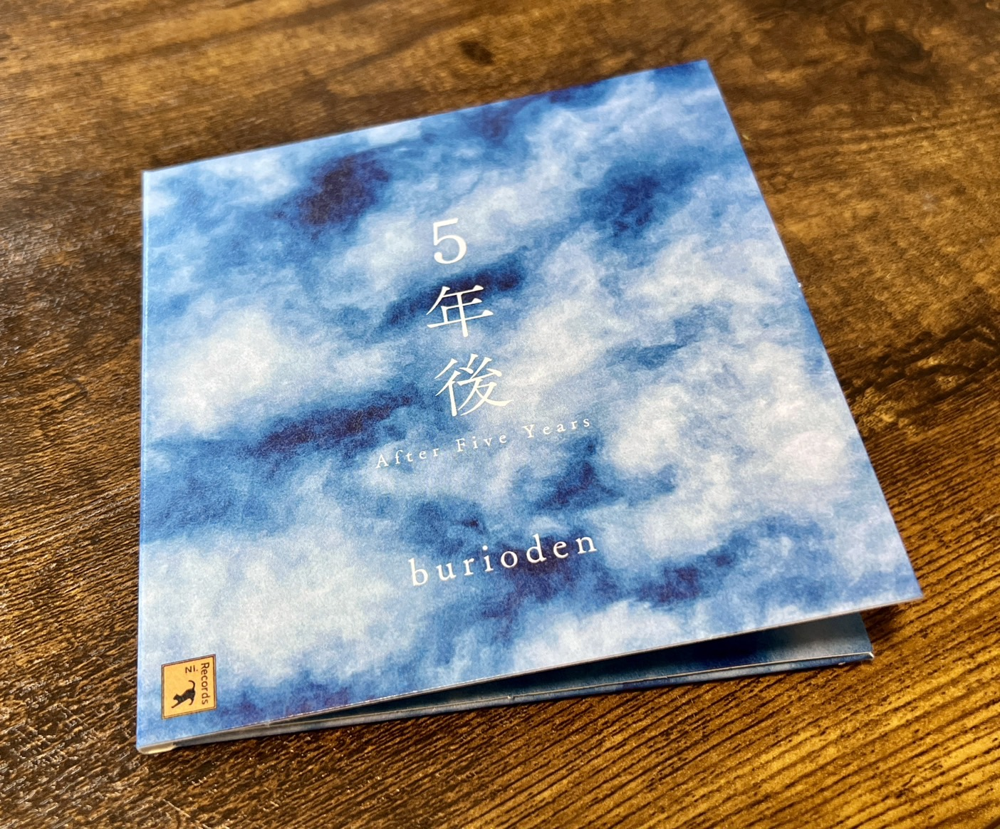
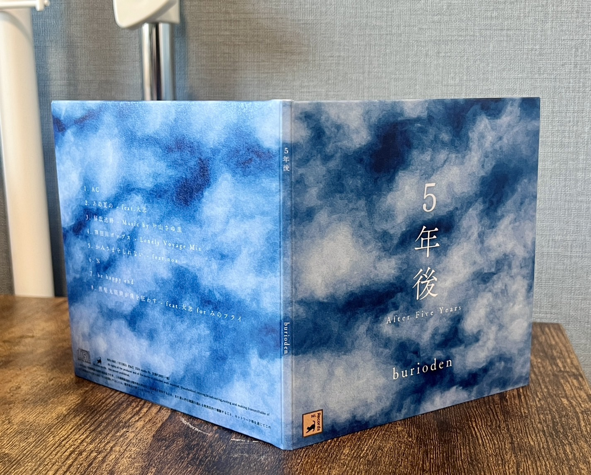
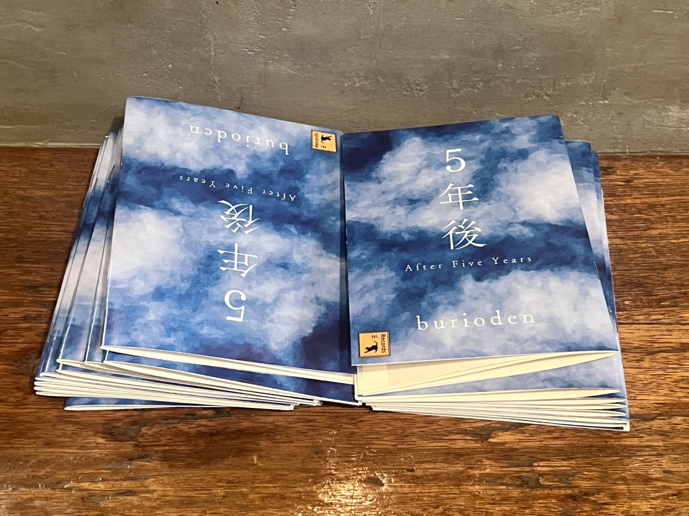
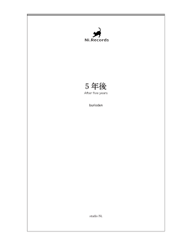
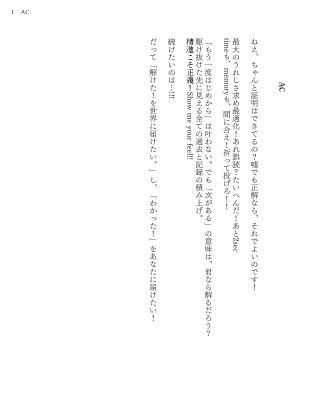
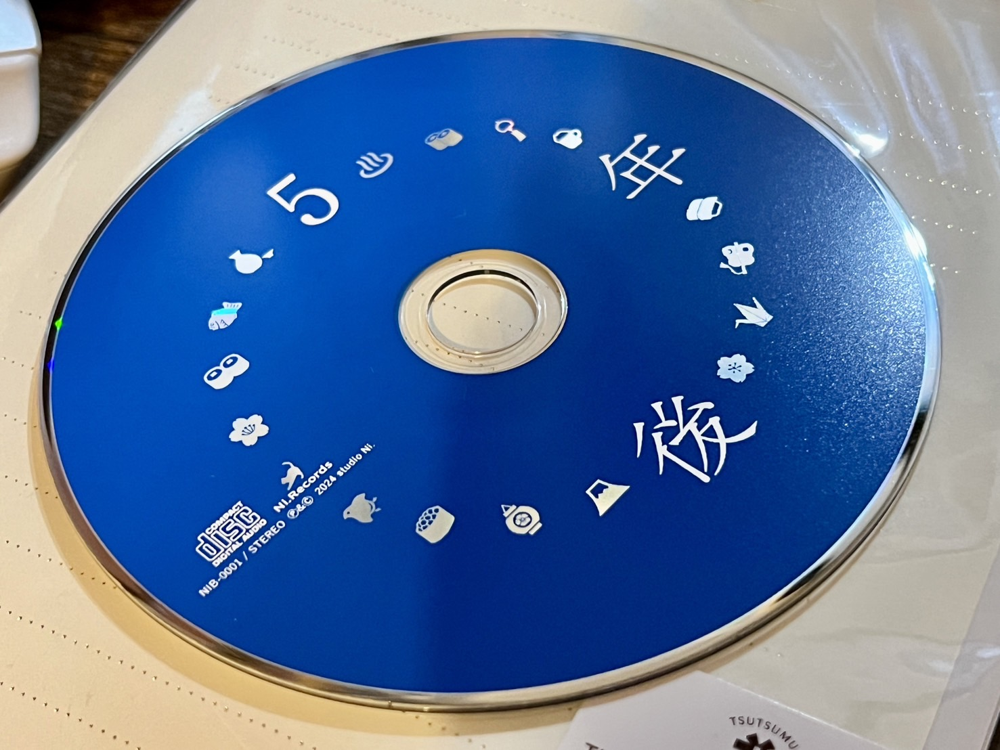

音楽CD『5年後』
2024年7月27日にリリースされた音楽CD『5年後』の作詞作曲、楽曲制作、動画編集、ジャケットデザイン、流通、それに伴うライティングなどなど…ありとあらゆる全てを担当。自主レーベル『Ni. Records』を立ち上げ、初のリリース。
トレイラー映像
Adobe Premiere Proを使用して制作したトレイラー映像。楽曲の一部を再編集し、繋ぎ目が不明瞭になるような違和感を意識して制作。
収録楽曲
楽曲は全てLogic proにて制作。プラグインはizotope、BFD3、EZ BASSを使用。初期楽曲は全てデフォルトプラグインのみで制作し、どんどん課金していった。基本的にギターと歌が生音、他は全て打ち込みを利用して制作。
1曲目『AC』は近年趣味としている競技プログラミングをテーマとした楽曲で、初のVOCALOID使用曲である。曲中に散りばめられたano（元所属バンド）のライブ定番曲の歌詞やメロにも注目。
『AC』ミュージックビデオ
2曲目『あの夏の』は今作で一番古くから温めた、大志(Mr.Sucide)とのコラボ楽曲。大志からオケが送られてきてから、ものの30分でメロと歌詞を付け送り返した衝動の1曲。
『あの夏の』ミュージックビデオ
3曲目『解放迷路』は親友の片山さゆ里が主催したトリビュートアルバム参加曲。同氏と共に愛するアルカラをイメージしてカバー。
4曲目『隅田川ポップス』はano時代、最後に発表した楽曲『多摩川バラード』のアンサーソング。生活も性格も変わってしまった切なさと強さがテーマとなっており、アルバム内で唯一、電子音のみで制作した楽曲。
『隅田川ポップス』ミュージックビデオ
5曲目『かみさまをしれない』は、人生で初めてDTM打ち込みを利用して制作。ピアノにnoaを招いている。次に続く楽曲『N』と共に、人生を道のりを変えてくれた、とある人への誕生日プレゼントとして制作。
7曲目『be happy end』は、今作のために制作された唯一の楽曲。初音ミクの歌声を飛び道具に活用し、皮肉たっぷりの歌詞と共にデュエットを行っている。
8曲目、ボーナストラック的立ち位置の『黒髪丸眼鏡が僕を狂わす』は、みのフライ様へのファンアートとして大志と共に制作。こちらも、オケが送られてきてからYouTubeに動画をアップするまでが6時間以内という、驚愕の速さで制作。
『黒髪丸眼鏡が僕を狂わす』ミュージックビデオ
ジャケットデザイン
 紙ジャケット。illustratorにてデザイン。印刷は国内企業に依頼。使用している写真は、2023年12月20日に撮影。確かその日は屋上で昼寝をしており、その時にお腹の上に乗っけたiPhoneで撮影。写真と絵画の間になるような加工を施した。本作は一貫して「小説の文庫本っぽさ」をテーマにしており、ジャケットのデザインも文庫本の表紙をイメージして制作。
歌詞カードデザイン
  文庫本をイメージし、Photoshopにてデザイン。街の印刷ショップで印刷し、自ら裁断、そして手製本、封入までを行った。アルバムの歌詞がまるで物語になるようなデザインを心掛けた。
盤面デザイン
5年間で好きになったもの、をテーマに、illustratorにてデザイン。それぞれのモチーフが抜き加工になっており、CDを光に当てるとキラキラ輝くようになっている。
流通
diskunion様にて8月21日(水)〜販売。取扱店舗は平成J-POPストア(新宿)、ROCK in TOKYO(渋谷)、お茶の水駅前店、下北沢店、吉祥寺店、神保町店、池袋店、高田馬場店、町田店、中野店、立川店、横浜関内店、横浜西口店、千葉店、柏店、北浦和店、大宮店、大阪店、名古屋店、オンラインストア。
詳細 / ご注文
インタビュー記事
片山さゆ里がインタビュアー、ライターとなり、作成。
【5年後】リリースインタビュー by 片山さゆ里 - note
通販
BOOTHにて匿名通販が可能。
配信
Spotify, Apple Music, LINE Musicなど各種配信ストアにて視聴可能。
配信ストア一覧